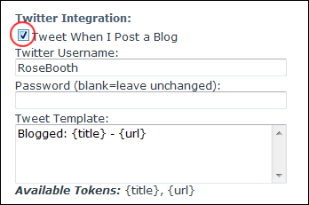

Integrating With Twitter
How to configure a single blog to tweet when a blogger posts a new entry. This can be performed by bloggers on their own blog and by Administrators on any blogs.
- Click the Blog Settings link on the New_Blog module - OR - Click the blog name on the Blog_List module and then select Edit Blog Settings from the View_Blog module actions menu. This opens the Edit Blog page.
- Go to the Twitter Integration section.
- At Tweet When I Post A Blog, to enable - OR - to disable.
- In the Twitter Username text box, enter your twitter username.
- Optional. In the Password text box, enter your new twitter password - OR - Leave blank to use your standard password.
- Optional. In the Tweet Template text box, edit the template of the tweets. The default template is: Blogged: {title} - {url}
-
Click the Update button.
Available template tokens:
- {title}: Displays the title of the blog entry
- {url}: Displays a URL link to the blog entry

Twitter Integration